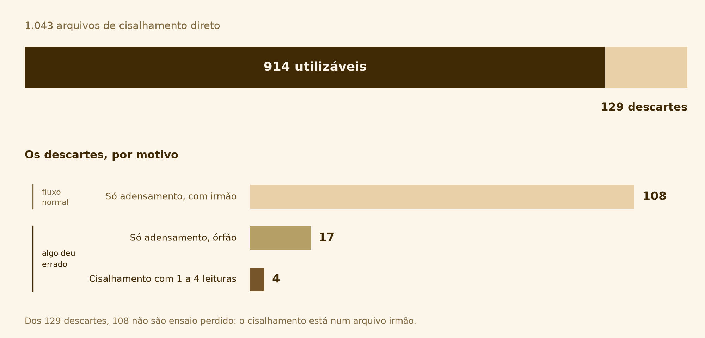
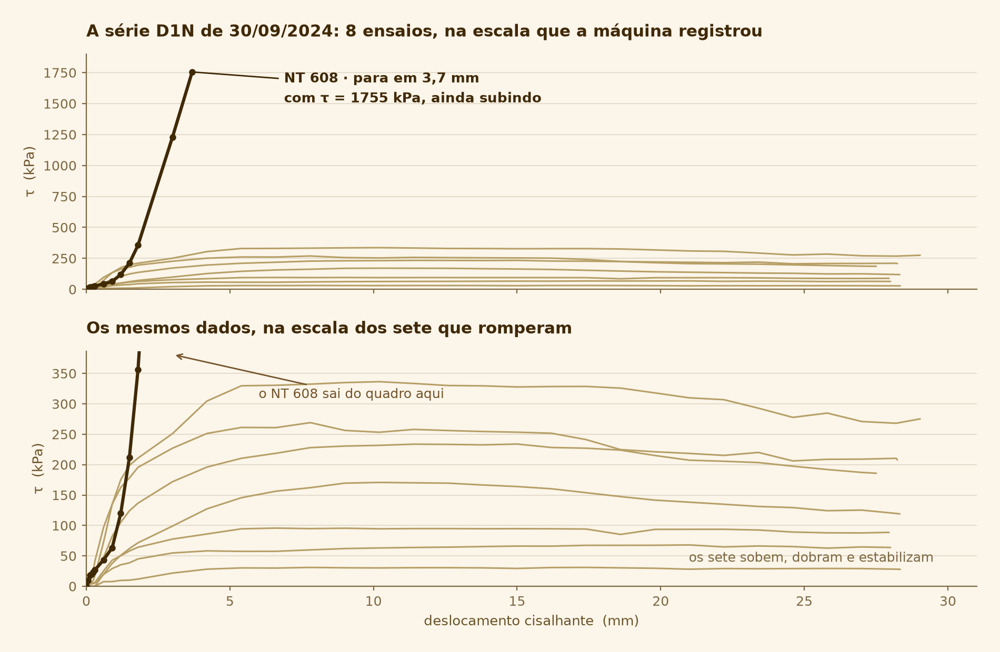
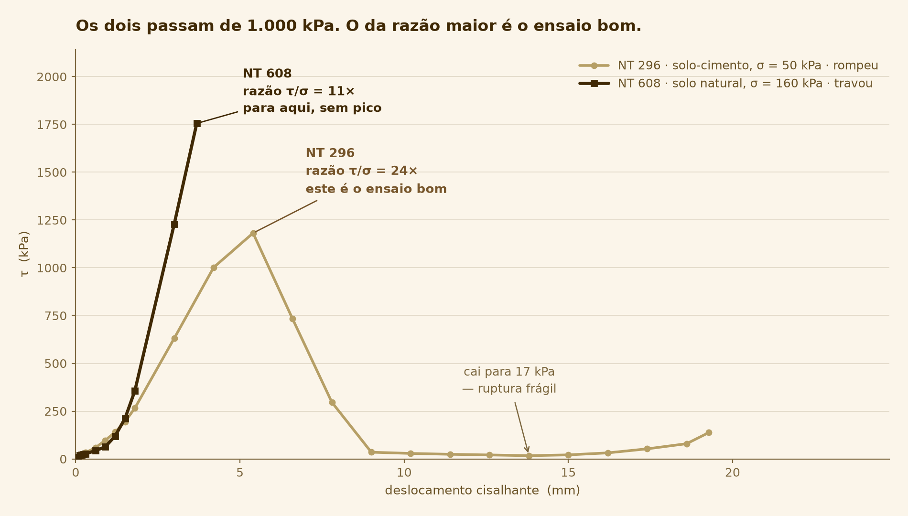

Reunião de alinhamento
Sistema automatizado de coleta e análise dos ensaios de cisalhamento direto — do arquivo bruto da máquina à envoltória de Mohr-Coulomb.
1.043 ensaios de cisalhamento direto, lidos automaticamente — de 2023 até hoje.
O resto desta apresentação é o que sustenta este resultado — e o que ainda falta confirmar para confiar nele.
- 01 O que mudou no escopo do projeto
- 02 Quatro coisas que o acervo escondia — e como o sistema as pegou
- 03 O que essas descobertas mudaram no desenho do sistema
- 04 Onde o projeto está guardado
O plano previa sensores. O laboratório já entrega dado pronto.
As máquinas gravam .csv sozinhas e estão em rede: 1.081 arquivos, de maio de 2023 a agosto de 2026. Não há sinal cru para ler — σ, τ e a área corrigida já vêm calculados no arquivo.
Sai do escopo
- Integrar sensores a um Raspberry Pi
- Ler célula de carga e LVDT
- Converter carga → força → tensão
- Corrigir a área em função do deslocamento
Entra no lugar
- Módulo de parsing do formato das máquinas
- Triagem de qualidade dos ensaios
- Agrupamento de arquivos em séries
- Relatório em PDF com gráficos
O trabalho não encolheu — mudou de natureza: de construir a ponte sensor→computador para engenharia de dados aplicada à geotecnia.
O acervo, em números
Os identificadores mostram arquivos de mais de uma pessoa do grupo — inclusive uma campanha de solo-cimento e uma campanha de 2026 que varia a velocidade de cisalhamento.
Dos 1.043 arquivos de cisalhamento direto, 914 viram ponto de envoltória. Dos 129 descartados, 108 são explicados por um arquivo irmão que contém a etapa que falta — apenas 21 indicam que algo deu errado.

triagem_acervo.py)Uma leitura anterior chamou os 129 de "ensaios abortados". Não são.
| Situação | Arquivos | Falha? |
|---|---|---|
| Etapa de cisalhamento com 5+ leituras | 914 | — |
| Só adensamento, com irmão de cisalhamento | 108 | não |
| Só adensamento, órfão | 17 | sim |
| Cisalhamento com 1 a 4 leituras | 4 | sim |
Os 108
125 arquivos não têm etapa de cisalhamento. 108 têm, no acervo, um arquivo de mesmo ID e mesma data com essa etapa — leitura mais provável: as duas etapas do ensaio (adensamento + cisalhamento) foram salvas em arquivos separados. Dedução a partir do padrão, ainda não confirmada pelo laboratório.
Decisão de desenho
O banco não guarda um booleano válido — guardaria os 108 exatamente como os 17. Guarda uma tabela ocorrencia com o motivo de cada descarte, individualmente.
O NT 608 (30/09/2024) marca τ = 1.755 kPa sob σ = 160 kPa — onze vezes a tensão normal. A leitura é real; resistência do solo não é. A curva nunca rompeu, só acelerou até o arquivo acabar.

O processamento manual lê o máximo de τ. Não tem como ver que a curva nunca rompeu.
| Critério (aplicado em série) | Ensaios |
|---|---|
| Etapa utilizável | 914 |
| Pararam antes de 5 mm | 13 |
| Pico no último ponto | 421 |
| Os dois juntos — não romperam | 9 |
| + trecho final acelerando | 3 |
| Ensaio | ID | σ | τ final | Desloc. |
|---|---|---|---|---|
| NT 268 | B2-1D-400D | 399 kPa | 794 kPa | 3,3 mm |
| NT 608 | D1N16 | 160 kPa | 1.755 kPa | 3,7 mm |
| NT 625 | D7W4 | 400 kPa | 1.457 kPa | 3,8 mm |
Um ensaio normal percorre 15–28 mm. Os três pararam entre 3,3 e 3,8 mm — e os três gravaram exatamente 13 pontos.
O filtro óbvio para achar ensaio ruim é "τ alto demais para essa tensão normal". Ele descartaria 211 ensaios para pegar 3. O ensaio de maior razão τ/σ do acervo inteiro — 24 vezes — é um ensaio bom.
| Filtro por magnitude (τ > 1,2σ) | Ensaios |
|---|---|
| Etapa utilizável | 913 |
| τ de pico > 1,2×σ | 211 |
| Destes, romperam (pico não é no fim) | 106 |
| Destes, também falham em não-ruptura | 3 |
O NT 608 (travado) tem razão 11× — menor que os ensaios da suposta campanha de solo-cimento da tabela acima. Não dá para calibrar um limiar que pegue um sem destruir o outro.

Ainda estamos descobrindo qual é o formato de cada ID do ensaio. Já descobrimos uma coisa com certeza: não havia um padrão estabelecido entre os identificadores digitados pelos operadores.
O que isso já muda
Nenhuma grandeza física — σ, τ, deslocamento, geometria — é lida do nome do arquivo. Vem sempre da coluna que a máquina mediu.
O que estamos planejando
Criar um padrão de ID, para facilitar pesquisas futuras e a implementação do banco de dados. A ideia é usar um subconjunto de ensaios como referência para definir esse padrão, e replicá-lo nos próximos ensaios a serem feitos.
O acervo tem dois formatos de .csv, com a mesma extensão. O tipo do ensaio não está escrito em nenhuma linha do conteúdo — só no nome do arquivo.
Três jeitos comuns de ler o arquivo errado — e nenhum avisa
- 1 Leitura posicional: devolve corpo de prova de 5 mm em vez de 50, sem aviso nenhum
- 2 Leitura por chave: acerta só por sorte — a chave existe, mas numa linha diferente da esperada
- 3 Leitura padrão em
pandas: dá erro, mas fala de "contagem de campos", não de tipo de arquivo
Quatro decisões que só existem porque o acervo foi lido, não suposto
- → Descarte guarda o motivo (tabela
ocorrencia), não um booleano — os 108 não são os 17 - → Qualidade se decide pela forma da curva (pico, queda, rigidez final) — nunca pela magnitude de τ
- → Nenhuma grandeza física vem do nome do arquivo — σ, τ, deslocamento sempre da coluna medida
- → Parser recusa o que não reconhece, em vez de adivinhar o layout
É engenharia de dados aplicada à geotecnia: o valor não está em automatizar o que a planilha já fazia, está em verificações que uma planilha não comporta.
O projeto já está versionado — código, registros e histórico, num repositório no GitHub

Obrigado. Perguntas?
Registros completos, com script e figura por trás de cada número, em docs/registros/.